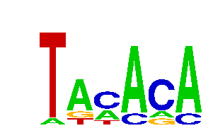

Motif: GAGCAC
length: 6
p-value: stats.binom_test(4,7,0.00747771067012)
Position Weight Matrix
A: 0.16 | 0.63 | 0.32 | 0.16 | 0.63 | 0.32 |
C: 0.05 | 0.05 | 0.00 | 0.32 | 0.32 | 0.68 |
G: 0.68 | 0.32 | 0.63 | 0.42 | 0.00 | 0.00 |
T: 0.11 | 0.00 | 0.05 | 0.11 | 0.05 | 0.00 |
19 instances found
S.octosporus_mad3_SOCG_04060_1093904-1094587
AGAGCA
______|_____________________________________________________________ + 67 - 617 | 684
GAGTAC
_____________________________|______________________________________ + 291 - 393 | 684
S.cryophilus_mad3_SPOG_03220_59185-59814
GGGCAC
________________________________________|______________________ + 407 - 223 | 630
DM_mad3_A1Z6I7_5974284-5974983
GATCAC
____________________________________|_________________________________ + 368 - 332 | 700
GGAGCA
______________________________________|_______________________________ + 384 - 316 | 700
GAGAAC
______________________________________________________|_______________ + 543 - 157 | 700
GAGAAC
_____________________________________________________________________| + 691 - 9 | 700
GAAGCA
_________________________________|____________________________________ + 334 - 366 | 700
S.japonicus_mad3_SJAG_04699_322485-322853
GAGGAC
__________|_________________________ + 102 - 267 | 369
GAGTAC
__________________________________|_ + 340 - 29 | 369
TGAGCA
____________________________________| + 360 - 9 | 369
Sp_mad3_upstream/SPCC1795.01c/III:996817-997415
GAGCTC
______________________|____________________________________ + 223 - 376 | 599
TGAGCA
_________________________________________________|_________ + 493 - 106 | 599
Hs_mad3_O60566_40160591:40161220_CDS
AAGCAC
______________|________________________________________________ + 149 - 481 | 630
CAGCAC
_________________________|_____________________________________ + 254 - 376 | 630
AGAGCA
________________________________________|______________________ + 401 - 229 | 630
GAGGAC
____________________________________________________________|__ + 606 - 24 | 630
S.cerevisiae_mad3_YJL013C_411041-411233
GAGAAC
________|__________ + 85 - 108 | 193
GCGCAC
____________|______ + 124 - 69 | 193
Motif: TACACA
length: 6
p-value: stats.binom_test(4,7,0.00747771067012)

Position Weight Matrix
A: 0.08 | 0.69 | 0.31 | 0.85 | 0.15 | 0.85 |
C: 0.00 | 0.00 | 0.54 | 0.15 | 0.69 | 0.15 |
G: 0.00 | 0.15 | 0.00 | 0.00 | 0.15 | 0.00 |
T: 0.92 | 0.15 | 0.15 | 0.00 | 0.00 | 0.00 |
13 instances found
S.octosporus_mad3_SOCG_04060_1093904-1094587
TACAGA
______________|_____________________________________________________ + 140 - 544 | 684
S.cryophilus_mad3_SPOG_03220_59185-59814
TACACA
_________________________|_____________________________________ + 253 - 377 | 630
TACACA
__________________________________________________|____________ + 506 - 124 | 630
TATACA
_______|_______________________________________________________ + 76 - 554 | 630
TTACAC
___________________|___________________________________________ + 190 - 440 | 630
TATACA
________________________|______________________________________ + 246 - 384 | 630
S.japonicus_mad3_SJAG_04699_322485-322853
TGCACA
_________________________|__________ + 259 - 110 | 369
Sp_mad3_upstream/SPCC1795.01c/III:996817-997415
TACACA
________________________|__________________________________ + 249 - 350 | 599
Hs_mad3_O60566_40160591:40161220_CDS
TACAGA
_|_____________________________________________________________ + 13 - 617 | 630
TAAACA
___________________________________|___________________________ + 354 - 276 | 630
S.cerevisiae_mad3_YJL013C_411041-411233
ATACAC
|__________________ + 0 - 193 | 193
TGCACA
__________|________ + 108 - 85 | 193
TAAACA
______________|____ + 146 - 47 | 193
Motif: TTGCCT
length: 6
p-value: stats.binom_test(4,7,0.00747771067012)
Position Weight Matrix
A: 0.07 | 0.00 | 0.04 | 0.00 | 0.15 | 0.00 |
C: 0.19 | 0.00 | 0.04 | 0.67 | 0.74 | 0.26 |
G: 0.11 | 0.00 | 0.48 | 0.26 | 0.04 | 0.00 |
T: 0.63 | 1.00 | 0.44 | 0.07 | 0.07 | 0.74 |
27 instances found
S.octosporus_mad3_SOCG_04060_1093904-1094587
TTGCAT
__________________________________|_________________________________ + 340 - 344 | 684
TTGTCT
_____________________________________|______________________________ + 373 - 311 | 684
TTCCCT
_________________________________________|__________________________ + 417 - 267 | 684
TTGCTT
___________________________________________________________|________ + 597 - 87 | 684
TTTCCT
_____________________________________________________________|______ + 615 - 69 | 684
S.cryophilus_mad3_SPOG_03220_59185-59814
CTGCCT
___________________________|___________________________________ + 279 - 351 | 630
TTTCCT
____________________________________|__________________________ + 366 - 264 | 630
TTACCT
_____________________________________|_________________________ + 373 - 257 | 630
TTGCTT
_______________________________________________________|_______ + 555 - 75 | 630
TTTCCT
________________________________________________________|______ + 563 - 67 | 630
S.japonicus_mad3_SJAG_04699_322485-322853
TTGTCT
_________________|__________________ + 177 - 192 | 369
TTGCAT
______________________|_____________ + 227 - 142 | 369
TTGCGT
__________________________|_________ + 269 - 100 | 369
TTTCCT
_____________________________|______ + 296 - 73 | 369
Sp_mad3_upstream/SPCC1795.01c/III:996817-997415
CTGCCT
_____|_____________________________________________________ + 50 - 549 | 599
ATTGCC
________|__________________________________________________ + 88 - 511 | 599
TTGCAT
_____________|_____________________________________________ + 131 - 468 | 599
TTGCAT
______________|____________________________________________ + 143 - 456 | 599
TTTGCC
___________________|_______________________________________ + 192 - 407 | 599
GTTGCC
___________________________|_______________________________ + 276 - 323 | 599
CTTGCC
________________________________|__________________________ + 323 - 276 | 599
CTTGCC
__________________________________________________________| + 588 - 11 | 599
Hs_mad3_O60566_40160591:40161220_CDS
TTTGCC
___________________________|___________________________________ + 274 - 356 | 630
ATGCCT
______________________________________|________________________ + 382 - 248 | 630
GTGCCT
___________________________________________________|___________ + 517 - 113 | 630
GTTCCT
____________________|__________________________________________ + 208 - 422 | 630
S.cerevisiae_mad3_YJL013C_411041-411233
CTTGCC
_________|_________ + 97 - 96 | 193